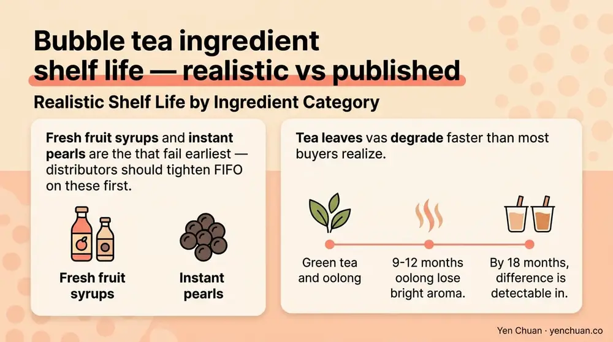
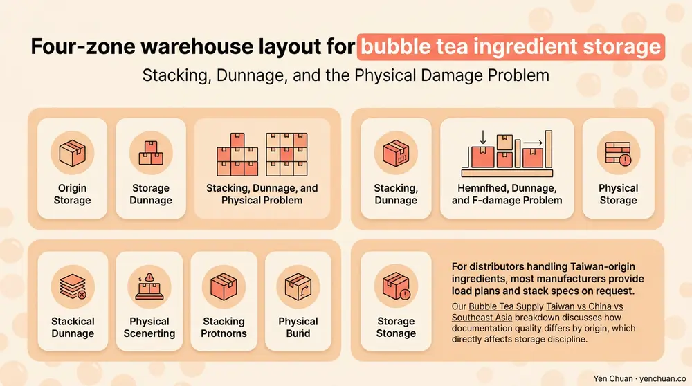

文章 / 經營與採購
Bubble Tea Ingredient Shelf Life & Storage Guide
這篇是英文原文，尚未完成繁體中文翻譯。中文選單與相關商品連結不會切回英文介面。

查看英文原文（尚未翻譯）
A single pallet of non-dairy creamer sitting in a poorly ventilated warehouse can cost a distributor more than the margin on the shipment itself. Bubble tea ingredients are unusually sensitive to temperature, humidity, and stacking pressure — and shelf-life claims on spec sheets assume storage conditions most warehouses don't actually hit. This guide walks through realistic shelf life windows for the eight most-imported bubble tea ingredient categories, the storage conditions that actually maintain them, and the warehouse practices that keep a distributor profitable.
Why Bubble Tea Ingredient Shelf Life Is Not What the Label Says
Most shelf-life figures printed on cartons assume a controlled environment of 15-25°C, 50-65% relative humidity, and stable stacking pressure. A warehouse in Houston summer running at 32°C and 80% humidity will cut published shelf life by 30-50%. A container unloaded in Jakarta and transferred to an un-air-conditioned distribution center can degrade creamer in under 90 days — barely a third of the 24-month label claim.
The drivers are simple chemistry. Moisture migration causes caking in powders and hydrolysis in syrups. Heat accelerates lipid oxidation in creamers, producing off-flavors. UV exposure fades natural colorants in tea-based SKUs. Understanding which ingredient category is most sensitive to which stress lets a warehouse manager zone storage correctly rather than treating everything as undifferentiated dry goods.
Realistic Shelf Life by Ingredient Category
The table below reflects what we actually see in distributor audits, not the label claim. Published shelf life in column two assumes ideal conditions; "realistic" reflects 25-28°C and 60-70% RH — typical ASEAN and Gulf warehouses.
| Ingredient | Published Shelf Life | Realistic Shelf Life | Key Risk |
|---|---|---|---|
| Dried tapioca pearls (sealed) | 12-18 months | 10-14 months | Moisture uptake → cracking |
| Instant pearls (vacuum-packed) | 6-9 months | 4-6 months | Syrup crystallization |
| Non-dairy creamer | 18-24 months | 12-18 months | Lipid oxidation |
| All-in-one milk tea powder | 12-18 months | 9-12 months | Caking, flavor loss |
| Fruit syrups (sugar-based) | 18-24 months | 14-20 months | Sugar crystallization |
| Fresh fruit syrups | 6-9 months | 4-6 months | Fermentation |
| Tea leaves (sealed) | 12-24 months | 9-18 months | Oxidation, light damage |
| Jelly toppings (sealed) | 9-12 months | 6-9 months | Syneresis (water release) |
Two patterns stand out. First, fresh fruit syrups and instant pearls are the categories that fail earliest — distributors should tighten FIFO on these first. Second, tea leaves degrade faster than most buyers realize. Green tea and oolong lose bright aroma at 9-12 months; by 18 months the difference is detectable in a side-by-side cup test.

The Four Storage Zones Every Distributor Needs
A warehouse holding bubble tea ingredients should run four distinct environmental zones, not a single "dry store." Mixing zones is the most common cause of early expiry write-offs we see at distributor audits.
Zone 1 — Ambient dry (18-25°C, 50-60% RH): dried pearls, powders, sealed tea, packaging. This is the largest zone and the one most warehouses handle correctly. The failure point is humidity during monsoon season in ASEAN warehouses, which should run dehumidifiers year-round.
Zone 2 — Cool dry (12-18°C, 40-55% RH): non-dairy creamer, fine powders, premium tea leaves. Cooler temperature extends shelf life by roughly 25-40%. For distributors holding more than USD 200,000 of inventory, a dedicated cool-dry room pays back within 18 months through reduced write-offs.
Zone 3 — Chilled (2-8°C): instant pearls, fresh fruit syrups, opened dairy creamer, some fruit purees. This zone is small but critical. Fresh fruit syrups stored at 2-8°C last 3-4× longer than ambient.
Zone 4 — Frozen (-18°C or below): frozen-dried pearls, some concentrates, premium fruit purees in export lots. Freezer zones hold shelf life at 12+ months consistently but add 15-20% to storage cost per pallet.
The economic test is simple: for every ingredient category, calculate the difference between write-off rate in the current zone and the write-off rate in the correct zone. If the delta exceeds the incremental rent and power cost, zone upgrades pay for themselves. Our Milk Tea Supplier Guide has a worked example of zone ROI for a typical regional distributor.
FIFO, FEFO, and the Lot-Tracking Discipline That Matters
Most warehouses claim they run FIFO (first-in, first-out). Very few actually do. The more defensible standard for bubble tea ingredients is FEFO — first-expiry, first-out — because incoming lots often have different production dates even when they arrive together.
A functional FEFO program requires three things. Lot-level intake: every pallet gets scanned with production date, expiry date, and supplier lot number at receiving. Pick-face rotation: the pick face holds the oldest remaining lot, replenished from reserve storage. Monthly expiry audit: a pull report flags everything within 90 days of expiry for promotional allocation before it becomes a write-off.
Most distributors we audit lose 3-7% of annual inventory value to expiry waste. Tightening FEFO typically cuts that to 0.8-2%, which on a USD 2M inventory is USD 60,000-100,000 of recovered margin per year. This is usually the single highest-ROI operational change a warehouse manager can make.
Stacking, Dunnage, and the Physical Damage Problem
Bubble tea ingredient cartons are not designed for deep stacking. A standard creamer carton rated for four-high will crush to six-high under long-term pallet load, damaging the moisture barrier and triggering caking within 60-90 days. The published maximum stack height on the carton is the limit, not a suggestion.
Three physical practices matter. Pallet double-decking should use rigid dunnage boards, never direct carton-on-carton. Aisle widths should accommodate reach trucks, not just pallet jacks — tight aisles cause forklift nicks that puncture moisture barriers. And every pallet should carry a visible expiry tag readable from the aisle, not buried under shrink wrap.
For distributors handling Taiwan-origin ingredients, most manufacturers provide load plans and stack specs on request. Our Bubble Tea Supply Taiwan vs China vs Southeast Asia breakdown discusses how documentation quality differs by origin, which directly affects storage discipline.

The Distributor's Write-Off Reduction Playbook
Warehouse discipline ultimately shows up in one number: annual write-off as a percentage of inventory value. The best distributors we work with run below 1.5%; the weakest run above 6%. Closing that gap is mechanical, not strategic.
Start with a 30-day audit of incoming lots versus stored lots versus picked lots — most warehouses cannot trace these cleanly, and that alone is why expiry gets out of control. Next, reset the pick face to FEFO and train staff on scanning discipline. Then install humidity monitors in each zone and set alarm thresholds at 65% RH for ambient and 55% for cool dry. Finally, run a quarterly review with suppliers: which SKUs consistently arrive within 90 days of expiry? That's a supplier-relationship issue, not a warehouse problem, and it deserves a renegotiation. Our FDA labeling guide also covers the documentation a US importer needs to keep clean against FDA inspection.
Authority Citations
- FDA — Current Good Manufacturing Practice (21 CFR Part 117)
- USDA — Food Product Dating and Storage Guide
- Institute of Food Technologists — Shelf Life Testing Principles
- GS1 — Global Standards for Lot Traceability
- Warehouse Management Institute — Storage Temperature Guidelines
About Yen Chuan
Yen Chuan has been at the heart of Taiwan's bubble tea industry for over 20 years, supplying premium powders, syrups, tapioca pearls, and tea leaves to thousands of boba shops worldwide. With an in-house R&D lab and a commitment to quality ingredients, Yen Chuan is more than a supplier — we're your partner in the boba business. We publish lot-level COAs and stacking specs on every export carton because warehouse discipline starts with the documentation suppliers provide.
Planning a Warehouse Reset?
Need help benchmarking your warehouse against Taiwan manufacturer specs? Talk to our logistics team — we'll share stacking diagrams, zone recommendations, and FEFO templates. For ingredient specs and certification details, browse the Yen Chuan online store.
Frequently Asked Questions
Q: How long do dried tapioca pearls actually last in a warehouse? A: Sealed dried tapioca pearls last 12-18 months under ideal conditions (18-25°C, 50-60% RH), but typically 10-14 months in real ASEAN or Gulf warehouses. Once opened, use within 6-9 months. Moisture uptake is the primary failure mode, causing pearls to crack and lose chew.
Q: Does non-dairy creamer need refrigeration in a warehouse? A: Sealed non-dairy creamer does not require refrigeration, but storing it in a cool-dry zone (12-18°C) extends shelf life by 25-40% compared with ambient. Once the bag is opened at a production line, re-seal within four hours and use within 30 days to avoid lipid oxidation.
Q: What is the difference between FIFO and FEFO for ingredient warehouses? A: FIFO (first-in, first-out) rotates stock by receiving date; FEFO (first-expiry, first-out) rotates by actual expiry date on the lot. FEFO is the correct standard for bubble tea ingredients because lots received together often have different production dates. Tightening FEFO typically cuts annual write-offs from 3-7% to under 2%.
Q: At what humidity level do bubble tea powders start caking? A: Sustained relative humidity above 65% causes noticeable caking within 30-60 days for most milk tea powders and creamers. The safer target for ambient dry storage is 50-60% RH. Installing dehumidifiers and setting alarm thresholds at 65% RH prevents the majority of humidity-related write-offs.
Q: How should tea leaves be stored in a wholesale warehouse? A: Tea leaves should be stored in sealed moisture-barrier packaging at 15-20°C, 50-55% RH, away from direct light and strong odors. Green tea and oolong are most fragile — keep them in a cool-dry zone and rotate within 9-12 months. Black tea and heavily-roasted oolong tolerate slightly warmer conditions for longer.